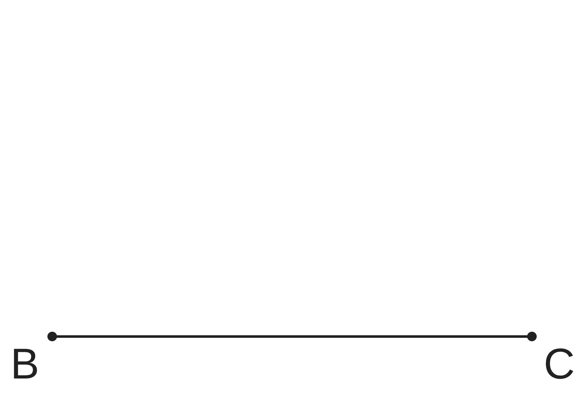
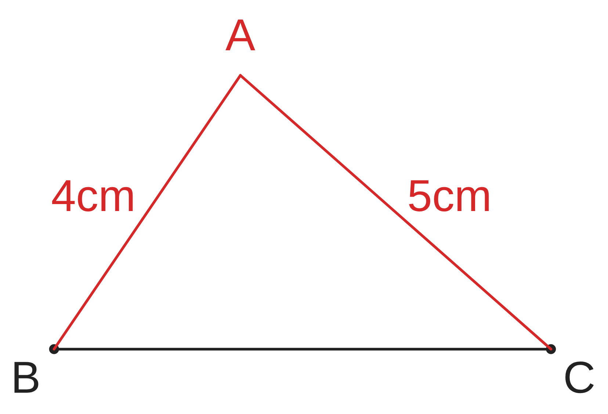
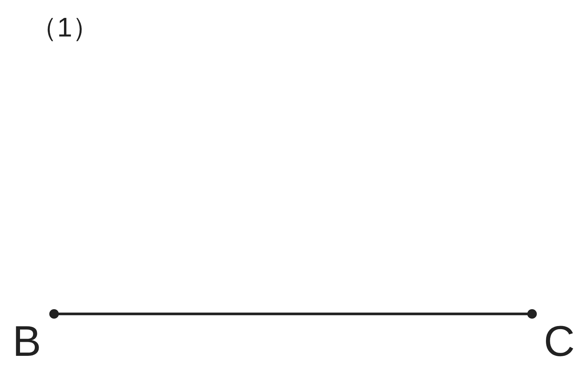
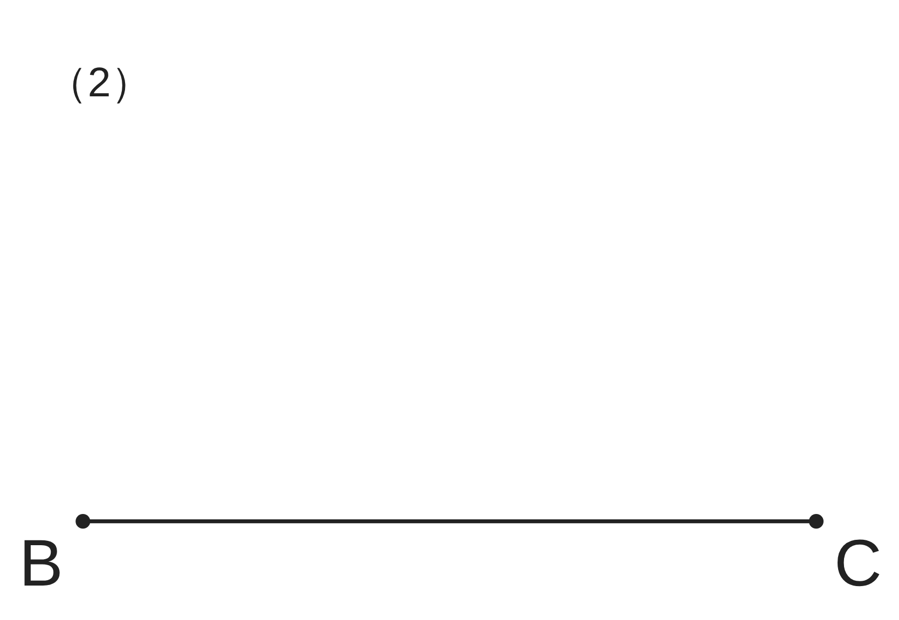
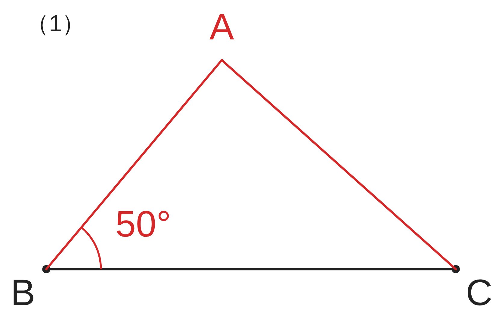
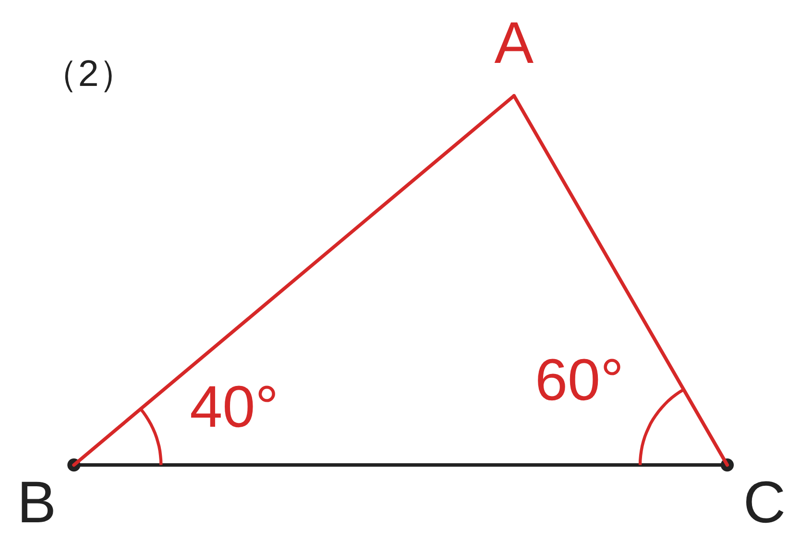
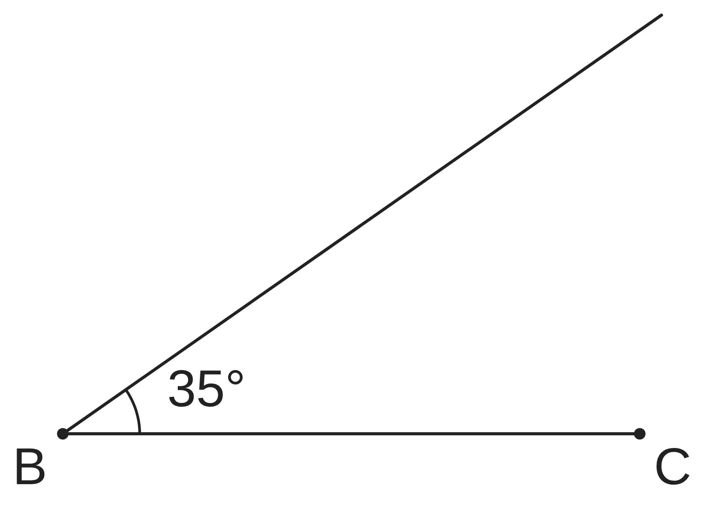

ペア学習
第9時 三角形は、何がわかれば1つに決まるだろう
第8時の重要語句から、1人1問ずつ、言葉を選んで出題する。
聞かれた人は、その言葉の意味を、自分の言葉で言う。
合同
対応
記号 ≡
平行と合同 第9時 三角形は、何がわかれば1つに決まるだろう
めあて
第9時 三角形は、何がわかれば1つに決まるだろう
学習課題
△ABC の形と大きさを、友達に電話で伝えて、
同じ三角形をかいてもらいたい。
3つの辺 AB＝4cm、BC＝6cm、CA＝5cm だけで、
同じ三角形がかけるだろうか。

線分 BC を使い、コンパスで △ABC（A は上がわ）をかいて、
となりの人と重ねよう。
平行と合同 第9時 三角形は、何がわかれば1つに決まるだろう
学習課題のまとめ
第9時 三角形は、何がわかれば1つに決まるだろう
3つの辺 AB＝4cm、BC＝6cm、CA＝5cm だけで、同じ三角形がかけるだろうか。
【重ねると、どうなっただろう】
ぴったり重なる。
（A は、B から 4cm、C から 5cm の点）
3つの辺の長さが決まると、
三角形は 1つに決まる。

平行と合同 第9時 三角形は、何がわかれば1つに決まるだろう
ことば
第9時 三角形は、何がわかれば1つに決まるだろう
2つの三角形が合同であるといえるための条件を、
三角形の という。
① が、それぞれ等しい。
② が、それぞれ等しい。
③ が、それぞれ等しい。
（辺 AB、AC の間の角は ∠A。辺 BC の両端の角は ∠B と ∠C）
平行と合同 第9時 三角形は、何がわかれば1つに決まるだろう
ことば
第9時 三角形は、何がわかれば1つに決まるだろう
2つの三角形が合同であるといえるための条件を、
三角形の合同条件という。
① 3組の辺が、それぞれ等しい。
② 2組の辺とその間の角が、それぞれ等しい。
③ 1組の辺とその両端の角が、それぞれ等しい。
（辺 AB、AC の間の角は ∠A。辺 BC の両端の角は ∠B と ∠C）
平行と合同 第9時 三角形は、何がわかれば1つに決まるだろう
例題
第9時 三角形は、何がわかれば1つに決まるだろう
次の条件で △ABC をかき、となりの人のとくらべよう。
（ペアで分担してもよい） 【重ねると、どうなっただろう】
（1）AB＝ cm、BC＝ cm、∠B＝ °
（2）BC＝ cm、∠B＝ °、∠C＝ °


平行と合同 第9時 三角形は、何がわかれば1つに決まるだろう
例題 解答
第9時 三角形は、何がわかれば1つに決まるだろう
（1）AB＝4cm、BC＝6cm、∠B＝50° （2）BC＝6cm、∠B＝40°、∠C＝60°


（1）（2）とも、となりの人の三角形と、ぴったり重なる。
（1）2組の辺とその間の角が決まると、三角形は 1つに決まる。
（2）1組の辺とその両端の角が決まると、三角形は 1つに決まる。
平行と合同 第9時 三角形は、何がわかれば1つに決まるだろう
考えよう
第9時 三角形は、何がわかれば1つに決まるだろう
図には、線分 BC と、∠B＝35° の半直線がかいてある。
①
C を中心に半径 4cm の円（弧）をかいて、
△ABC をかこう。
できた三角形は、何通りあるだろう。
②
例題（1）（2辺とその間の角）のときと、
何がちがうのだろう。
かき方をふり返って、説明しよう。

発展
BC＝6cm、∠B＝35° は
そのままで、CA の長さだけを
3cm、5cm、7cm に
変えると、△ABC は、
それぞれ何通りか
かけるだろう。
平行と合同 第9時 三角形は、何がわかれば1つに決まるだろう
振り返り
第9時 三角形は、何がわかれば1つに決まるだろう
今日のめあて
合同条件
3組の辺
2組の辺とその間の角
1組の辺とその両端の角
今日わかったことを、ペアで1つずつ言い合おう。
ワークシートと演習プリントを出そう。（未完成でも出す）
平行と合同 第9時 三角形は、何がわかれば1つに決まるだろう